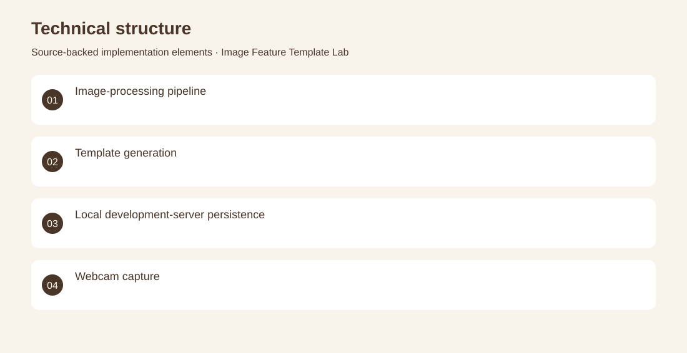

The project
Explore the preprocessing steps used before comparing visual image features. An image-upload workflow converts images to grayscale, resizes and equalizes them, then saves generated templates through a development-server endpoint. Implemented image-processing utilities, feature-template creation, upload handling and a Vite persistence plugin. Archived technical prototype; identity-recognition accuracy and production deployment are not established.
The problem
Explore the preprocessing steps used before comparing visual image features.
The solution
An image-upload workflow converts images to grayscale, resizes and equalizes them, then saves generated templates through a development-server endpoint.
My contribution
Implemented image-processing utilities, feature-template creation, upload handling and a Vite persistence plugin.
Technical structure

The portfolio cover is an editorial illustration. No live product screenshot is presented for this project.
Showcase assets
{kind=link}
{kind=link}
{kind=link}
New portfolio identity. Newly designed marks are portfolio treatments, not claims of official client branding.